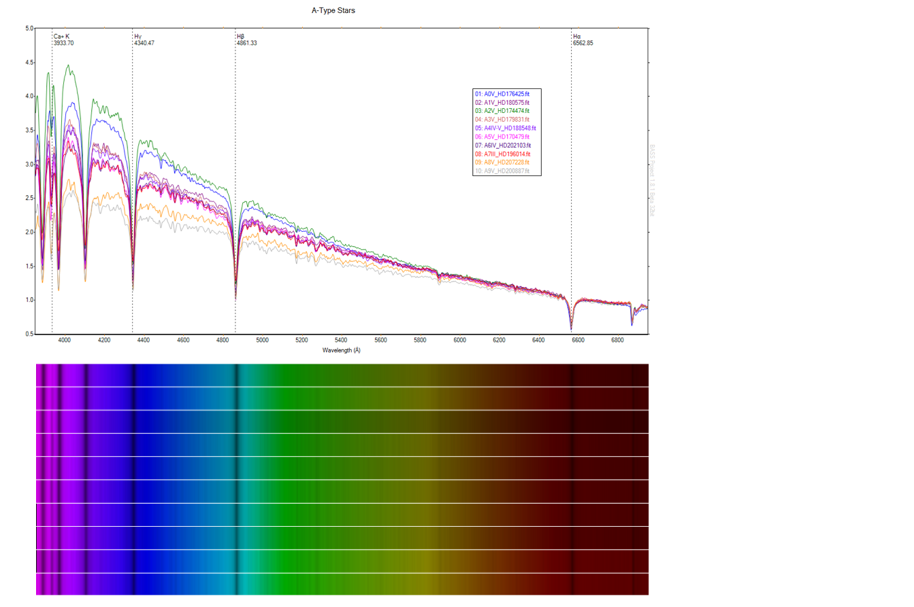
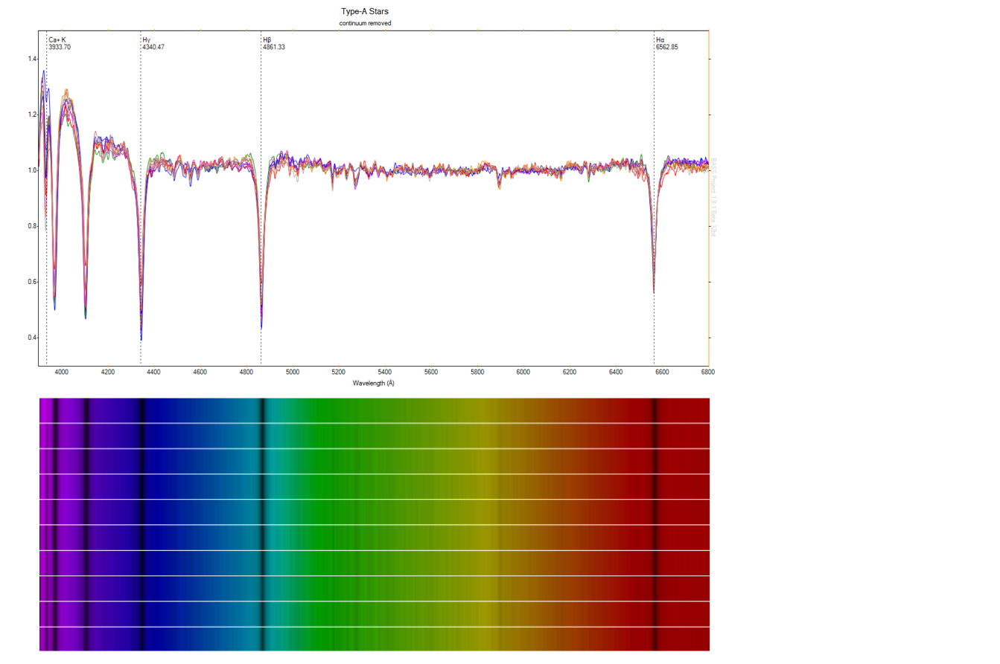

A series of A-Type stars acquired on the 17th and 20th September, 2015 with an Alpy 600. Even at low resolution, it's possible to detect subtle increases in complexity in the sequence. An increase in line strength of ionised CaII is particularly obvious.
(click to enlarge)

The same sequence, but with the continuum removed:
